How a whisper plays
When
- Only from two people talking: the student who starts a whisper or a hand-over, once the neighbour beside them has leaned in. A lone glance or lean makes no sound.
- Only if the invigilator is close enough to hear it. The simulation decides that; the sound only decides what it sounds like.
Whose voice
- A student drawn as a man whispers from the male pool, a student drawn as a woman from the female pool. The choice comes from the body the room shows, the same one the name and admission card describe. Nothing hidden is read.
- A female student never gets a male clip, and the other way round. Tests check both.
Variety
- A random phrase from the pool, never the same one twice in a row.
- A small random pitch change, up to ±4%, so a repeated phrase is not the same take.
- About one male whisper in five starts with a real whispered "hey". There is no female "hey", so female whispers never use it.
Where and how loud
- From the whispering student's head, as a 3D sound (linear fall-off from 1 to 24 m). Other room noises (a dropped pencil, a chair, a call) still play from the centre of their part of the room.
- At 0.7 × the effects volume. The clips are mastered at −26 LUFS; this puts a whisper just under the old placeholder and never louder than a student calling out.
Heard in a real exam
A first exam with four students, with passing made much more frequent for the check. Each row is a whisper the game played: who whispered, how the room draws them, the clip, and where the sound came from (their seat is shown for comparison).
| Student | Drawn as | Clip played | Pitch | Sound from (x, y, z) | Seat (x, z) |
|---|---|---|---|---|---|
| Ayşe Koç | Female | Female · Shuffled 5 | 0.973 | −2.38, 1.09, 5.40 | −2.5, 5.5 |
| Tolga Şahin | Male | Male · Reversed B | 1.036 | −2.43, 1.08, 2.22 | −2.5, 2.5 |
| Emre Koç | Male | Male · Shuffled 2 | 0.992 | 0.37, 1.09, 5.41 | 0.5, 5.5 |
| Emre Koç | Male | "hey", then Male · Shuffled 2 | 0.985 | 0.37, 1.09, 5.41 | 0.5, 5.5 |
| Ayşe Koç | Female | Female · Reversed E | 1.013 | −2.38, 1.09, 5.40 | −2.5, 5.5 |
| Ceren Ergün | Female | Female · Shuffled 5 | 1.002 | 0.37, 1.08, 2.41 | 0.5, 2.5 |
The height of about 1.1 m is a seated student's head; the small sideways offset is the lean toward the neighbour.
The male pool
"Whispering Midnight" by balloonhead, plus "Hey Whisper" by qubodup, both tagged male.
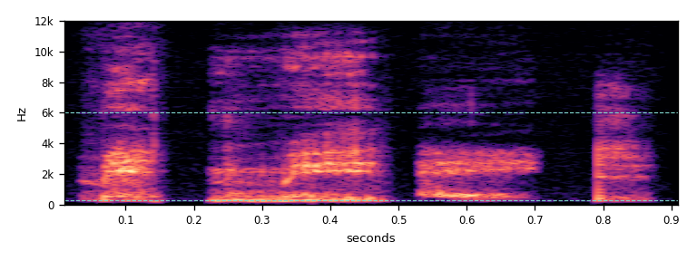
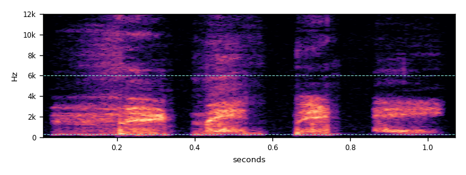
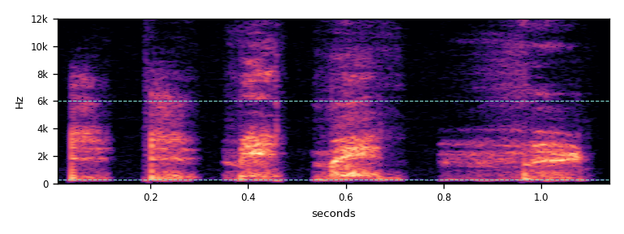
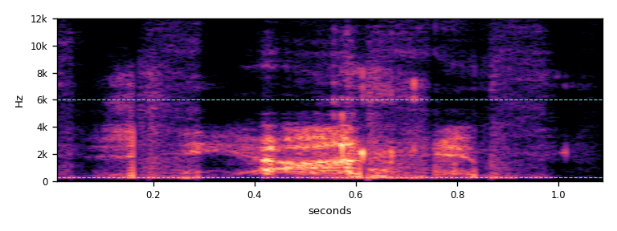
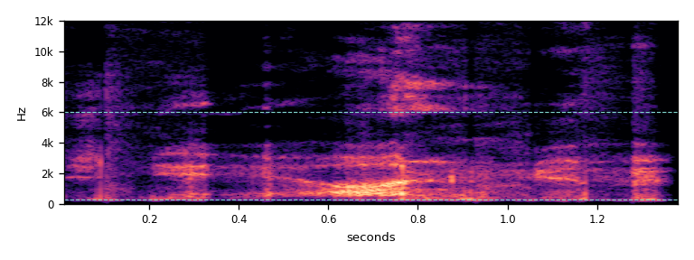
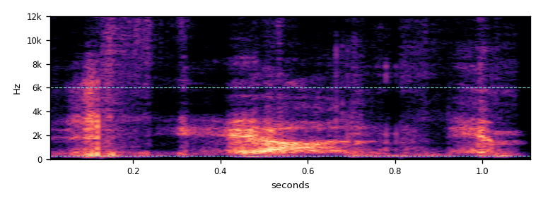

The female pool
"Whisper.wav" by AlexMiller2000, tagged girl. The recording is short (8 usable bursts), so the pool was grown from it with the same rules: three new shuffles that share no neighbouring pair of bursts and no opening burst with another female phrase, and a shortened reversal.
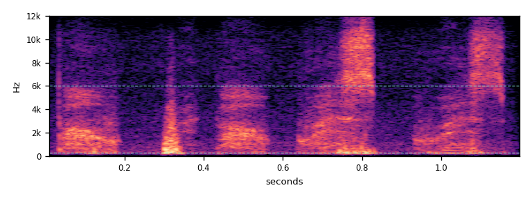
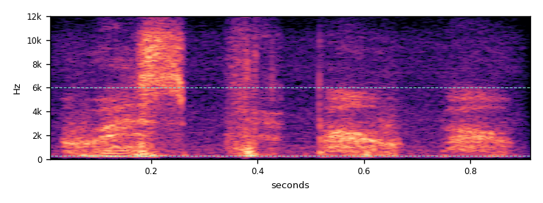
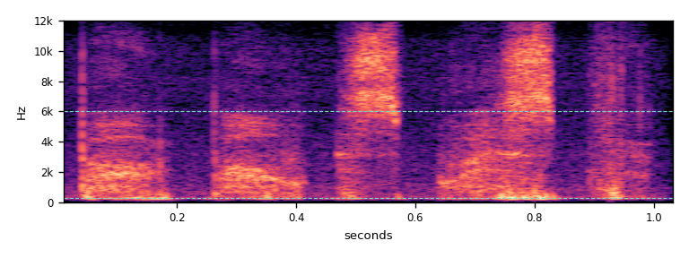
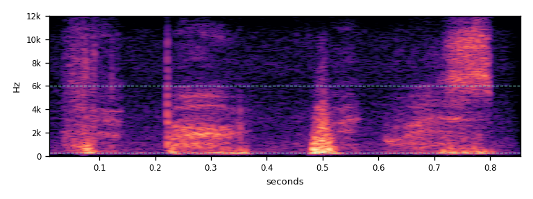
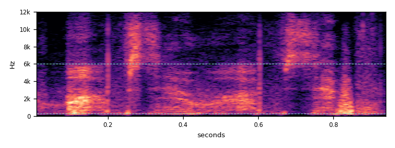
How the words were removed
The plain cuts were dropped after listening: whole words ("midnight") came through. Every phrase in the game is rebuilt one of two ways.
Shuffled
- The recording is split into single bursts of 70–400 ms at the dips in loudness. Longer bursts, which could hold a whole word, and bursts with a pitch are left out.
- A phrase is 4–5 bursts of one voice. Two bursts that were neighbours in the recording are never placed next to each other (male: at least 3 bursts apart; female, 8 bursts only: at least 2).
- Gaps of 40–90 ms, filled with the recording's own room sound, so it never drops to digital silence.
Reversed
- The sound runs backwards, but each burst keeps its forward loudness shape (correction capped at ±12 dB), so syllables still start sharply and fade, instead of the usual swelling "reverse" effect.
- Cuts of 1.1–1.4 s for the male voice and 0.95 s for the female one.
The numbers
A real whisper has its energy mostly in the speech band (0.3–6 kHz), no pitch, and loudness that rises and falls in syllables. "Pitched" is the share of frames with a clear pitch period: a spoken sentence scores 65%, the same sentence whispered 4%, noise 0%. All shipped clips are 10% or under. The female voice is brighter and has more low thump from mouth sounds, so less of it sits in the speech band.
| Clip | Length s | LUFS | Peak dBFS | Centre Hz | <300 Hz | 0.3–6 kHz | >6 kHz | Pitched | Syllables | Syll/s |
|---|---|---|---|---|---|---|---|---|---|---|
| Male · Shuffled 1 | 0.92 | −26.0 | −10.4 | 1671 | 12% | 86% | 2% | 9% | 4 | 6.2 |
| Male · Shuffled 2 | 1.08 | −26.0 | −11.0 | 1616 | 2% | 97% | 0% | 8% | 4 | 5.2 |
| Male · Shuffled 3 | 1.15 | −26.0 | −7.7 | 1755 | 2% | 96% | 1% | 5% | 5 | 6.2 |
| Male · Reversed A | 1.10 | −26.0 | −7.7 | 1560 | 2% | 98% | 0% | 0% | 4 | 6.2 |
| Male · Reversed B | 1.39 | −26.0 | −8.5 | 1116 | 1% | 98% | 1% | 9% | 5 | 5.3 |
| Male · Reversed C | 1.12 | −26.0 | −6.3 | 1180 | 2% | 98% | 0% | 3% | 3 | 4.3 |
| Male · "hey" (opener) | 0.35 | −26.0 | −10.3 | 1456 | 0% | 100% | 0% | 7% | 1 | 3.3 |
| Female · Shuffled 4 | 1.21 | −26.0 | −7.2 | 1847 | 20% | 68% | 12% | 2% | 5 | 6.2 |
| Female · Shuffled 5 | 0.92 | −26.0 | −9.6 | 2438 | 14% | 70% | 16% | 3% | 4 | 6.0 |
| Female · Shuffled 6 | 1.04 | −26.0 | −10.1 | 2997 | 19% | 54% | 27% | 5% | 5 | 6.5 |
| Female · Shuffled 7 | 0.87 | −26.0 | −6.5 | 1111 | 25% | 70% | 5% | 7% | 4 | 7.7 |
| Female · Reversed E | 0.95 | −26.2 | −3.2 | 1671 | 10% | 86% | 5% | 0% | 4 | 5.1 |
| Old placeholder (removed) | 0.55 | −28.3 | −21.2 | 8644 | 2% | 40% | 58% | 0% | 0 | 0.0 |
The old placeholder was 0.55 s of filtered white noise, most of it above 6 kHz, with no syllables: it sounded like hiss. It is gone from the game.
Known limits
- The four new female clips were measured, not yet listened to. Any clip can be rebuilt with a different burst order.
- The clips are made from Freesound's MP3 previews. The original WAVs (free login, same licence) would give a slightly cleaner top end; the tools rebuild everything from them unchanged.
- With headphones, a whisper can now be placed on a desk, while the on-screen line names only a part of the room. The phone buzz already worked this way. A whisper only happens between two students already leaning together, which the player can see.
Licence and edits
Every recording is CC0 1.0 (public domain), so no credit is required. The credits here are a courtesy. All clips: 220 Hz high-pass, 12 kHz low-pass, mono 44.1 kHz 16-bit, −26 LUFS (ITU BS.1770), single clicks held under −3 dBFS. The provenance, edits and processing scripts are kept with the game's source art.
| Voice | Freesound file | Author | Material |
|---|---|---|---|
| Male: Shuffled 1–3, Reversed A–C | 362503 Whispering Midnight.wav | balloonhead | 10 bursts; cuts 5.92–7.08, 1.90–3.42, 7.60–8.98 s |
| Male: "hey" | 849127 Hey Whisper | qubodup | whole |
| Female: Shuffled 4–7, Reversed E | 620041 Whisper.wav | AlexMiller2000 | 8 bursts; cut 0.50–1.45 s |